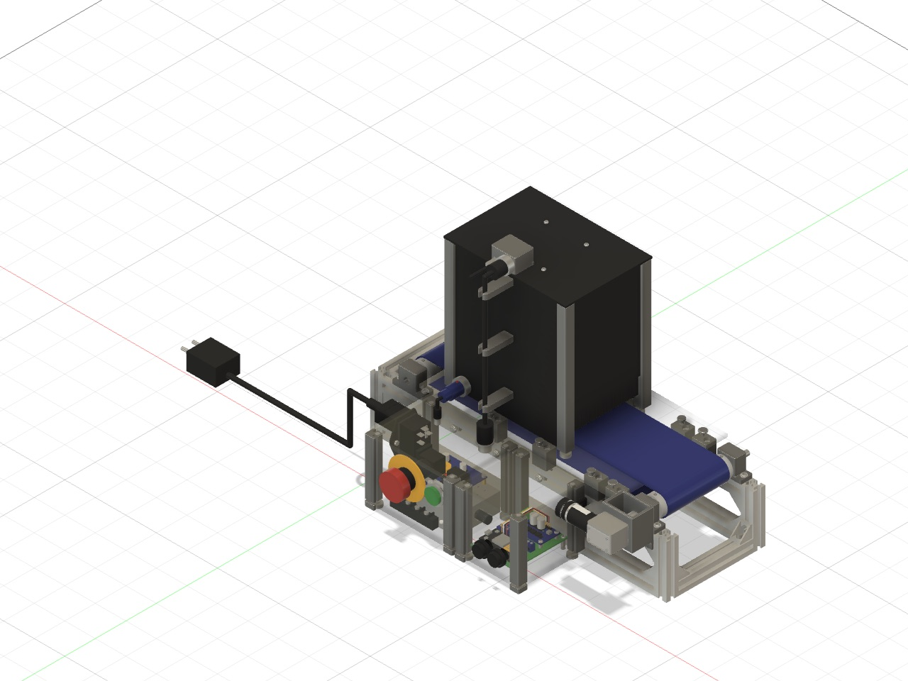
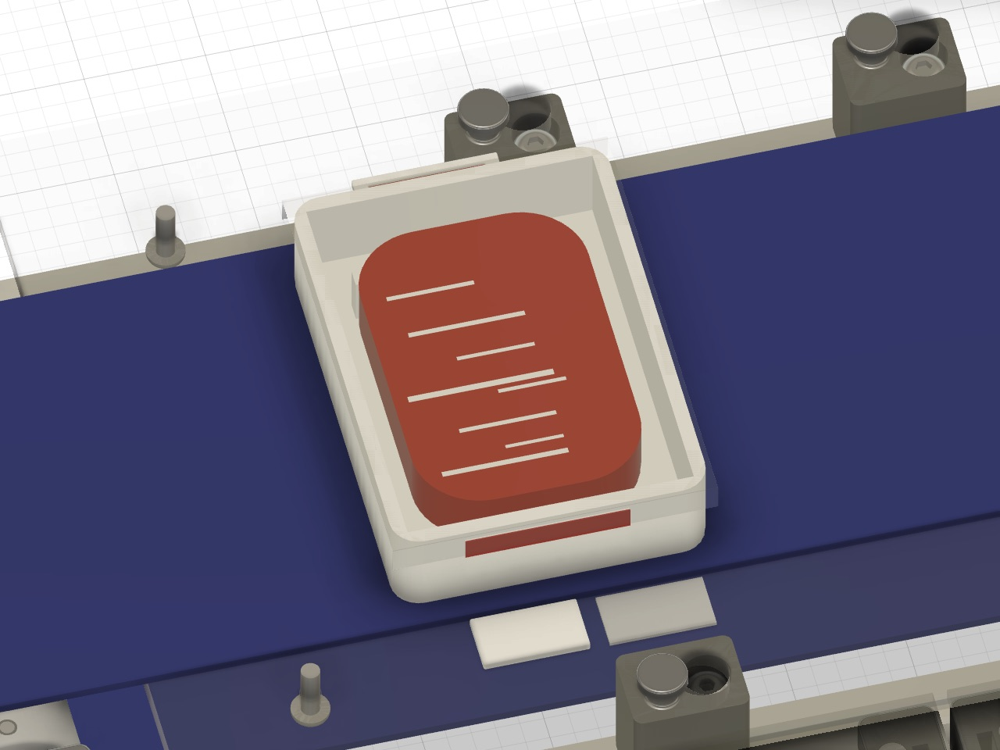
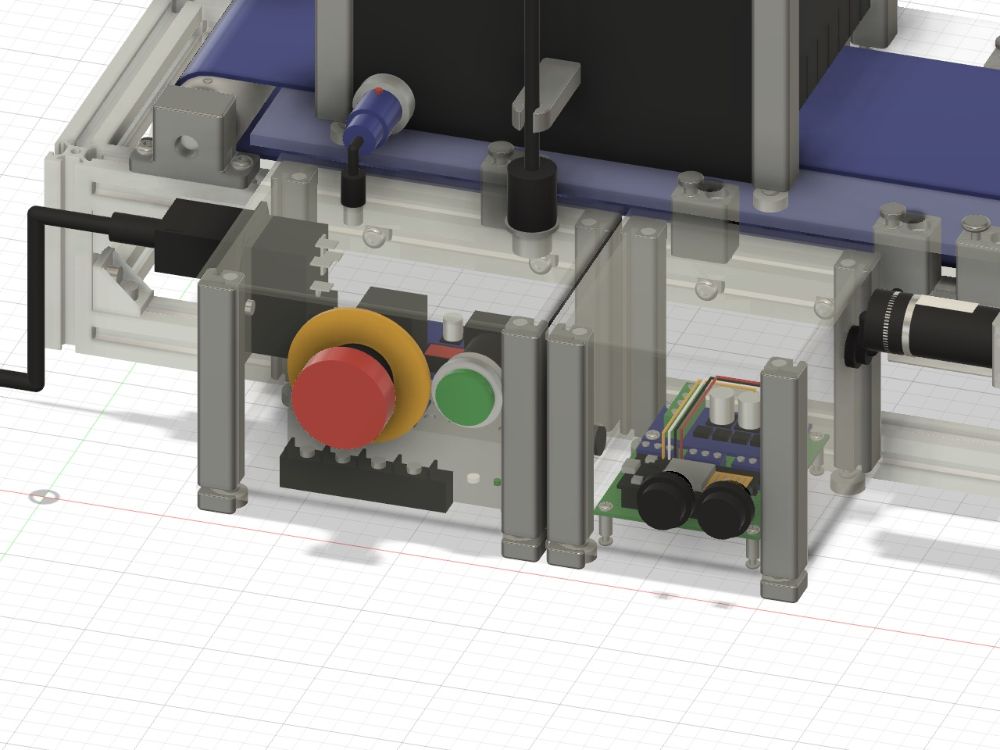
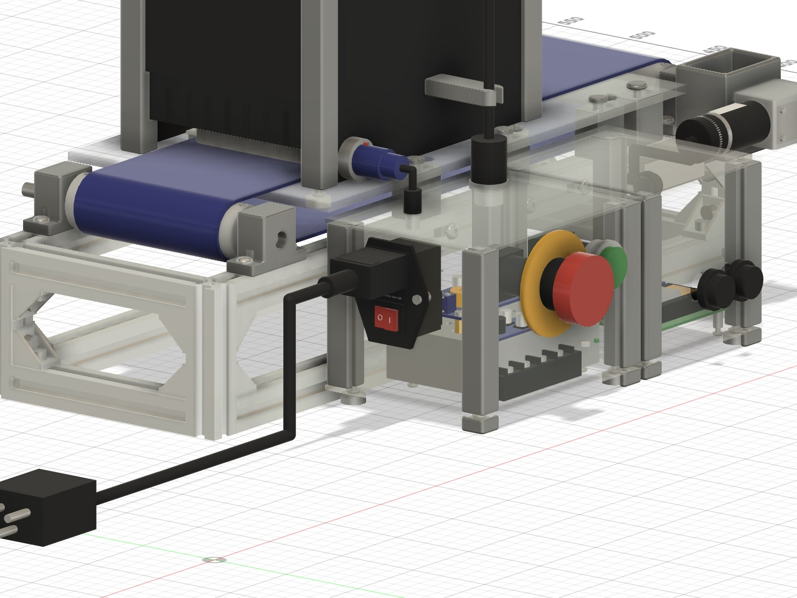

สถานีตรวจคุณภาพเนื้อวัวบนสายพาน
สายพานสั้นที่พาแพ็กเนื้อเข้าอุโมงค์ปิดแสง หยุดถ่ายภาพ วัดไขมันแทรก (marbling) สีเนื้อ และอ่านเซนเซอร์เสริม แล้วแสดงผลเป็นสถานะ ไม่คัดแยกเนื้อ (โมดูลคัดแยกเป็นออปชัน)

คลิปแนะนำ
แนวตั้ง 53 วินาที พากย์ไทย (เสียงสังเคราะห์)
หลักการทำงาน (stop-and-capture)
ESP32 คุมสายพานด้วยตำแหน่งจากเอนโค้ดเดอร์ ส่วนโปรแกรมบนคอมพิวเตอร์วิเคราะห์ภาพ
- วางแพ็กเนื้อบนสายพาน โฟโต้เซนเซอร์ตรวจพบ
- สายพานเดินระยะที่ตั้งไว้ จนแพ็กหยุดใต้กล้องในอุโมงค์ปิดแสง
- ไฟขาว (และ NIR/UV ในชุด Plus) ติดทีละแบบ กล้องถ่ายภาพพร้อมแผ่นสีอ้างอิง
- โปรแกรมคำนวณ % ไขมันแทรก สีเนื้อ L*a*b* และอัตราส่วนสีน้ำตาล แล้วจัดสถานะ (เกณฑ์เป็นค่าเริ่มต้น ต้องปรับเทียบ)
- สายพานเลื่อนไปใต้เซนเซอร์สเปกตรัม อุณหภูมิผิว และก๊าซ แล้วปล่อยแพ็กออก
การออกแบบ
ออกแบบใน Fusion 360 ให้ประกอบได้จริง เน้นลดจำนวนสกรูที่เห็นและถอดประกอบง่าย

แพ็กเนื้อวัว
ถาดโฟม 65×90 มม. แผ่นซับ สเต็ก ฟิล์มห่อ และสติกเกอร์ ขนาดจำกัดตามมุมมองกล้อง

อุโมงค์ปิดแสง
เสาพิมพ์มีร่องสอดแผ่นอะคริลิกดำ ฝาปิดด้วยแม่เหล็ก กล้องและเซนเซอร์เป็นตลับสไลด์เข้ารางหางเหยี่ยว

ชุดขับ
มอเตอร์ DC เกียร์ฉากแบบเฟืองตัวหนอน ติดเอนโค้ดเดอร์ สายเดินในรางไวร์ดักท์ 20×20

กล่องควบคุม
อะคริลิกใส เสาพิมพ์ แผงสอดร่อง ฝาแม่เหล็ก กล่อง A ไฟบ้าน/PSU/E-stop กล่อง B ESP32 และไดรเวอร์

ไฟเข้าเครื่อง
ช่อง IEC C14 มีฟิวส์และสวิตช์ในตัว เสียบสาย AC ปลั๊กไทย งานไฟบ้านต้องให้ช่างไฟตรวจ

ลูกกลิ้งและแท่นลูกปืน
ลูกกลิ้งพิมพ์ 3 มิติ แท่นลูกปืน 608ZZ ยึดบนรางด้วยสกรู M5 และ T-nut
วัสดุและชิ้นส่วน
น็อตที่หาง่าย: หัวจมหกเหลี่ยมกับโปรไฟล์ หัวร่มปากแฉกกับงานอื่น
| ส่วน | รายละเอียด |
|---|---|
| โครง | อะลูมิเนียมโปรไฟล์ 2020 ฉากมุมหล่อ T-nut M5 (โครงสั้น 485×162 มม. สายพานสูงจากโต๊ะ ≈ 120 มม.) |
| แผ่น | อะคริลิกดำ/ใส 3 มม. และ 5 มม. ซื้อแผ่นใหญ่ วัด ตัด เจาะเอง (มีใบรายการตัดและตารางรู) |
| ชิ้นพิมพ์ | PETG ประมาณ 0.84 กก. ใช้เกลียวทองเหลืองฝังร้อนเฉพาะในชิ้นพิมพ์ |
| ไฟฟ้า | ESP32 DevKit, ไดรเวอร์ Cytron MD13S, PSU 12 V 5 A, บัค 5 V, E-stop, ช่อง C14, คอนเนคเตอร์ GX16/M8 |
| ตรวจวัด | เว็บแคม USB, ไฟขาว COB, (Plus) ไฟ NIR 850 / UV 365, AS7341, MLX90614, MQ-137, ฟิล์มกะหล่ำ |
| ซอฟต์แวร์ | firmware ESP32 (Arduino) และโปรแกรม Python วิเคราะห์ภาพ (ผ่านการทดสอบบนภาพสังเคราะห์เท่านั้น) |
งบประมาณ
ประเมินเมื่อ 4 พ.ย. 2569
| ชุด | ประมาณ (บาท) |
|---|---|
| แกนหลัก (ตรวจด้วยกล้อง + โครงทั้งหมด) | ≈ 6,300 (≈ 6,070 ถ้ามีคัตเตอร์ ตะไบ ดอกสว่านอยู่แล้ว) |
| ชุด Plus (NIR/UV, AS7341, MLX90614, MQ-137) | ≈ +1,290 |
| โมดูลคัดแยก (ออปชัน) | ≈ +860 |
ส่วนใหญ่เป็นราคาประมาณ ไม่ใช่ใบเสนอราคา (ยืนยันแล้วเฉพาะเว็บแคม C270 และราคาเส้นพลาสติก) สายพานสั่งทำและโปรไฟล์ต้องขอราคาจริง เป้าหมายงบ 4,500–6,000 บาท ตอนนี้ยังเกินเล็กน้อย
ข้อจำกัดที่ต้องรู้
ยังไม่ได้ validate ความแม่นยำการจัดเกรด เกณฑ์ marbling และสถานะเป็นค่าตั้งต้น ต้องเก็บภาพเนื้อจริงพร้อมค่าอ้างอิงก่อนใช้ เครื่องนี้เป็นเครื่องมือคัดกรอง ไม่ใช่การรับรองความปลอดภัยของอาหาร
ยังไม่ได้ประกอบและทดสอบ ต้องจูน PID, ปรับเทียบ counts/มม., ตั้งโฟกัสกล้องที่ ~15 ซม. และวัดขนาดมอเตอร์/ไดรเวอร์จริงก่อนพิมพ์ขายึด
ส่วนประกอบในแบบเป็นรูปทรงทั่วไป E-stop ช่อง C14 PSU และไดรเวอร์ ยังไม่ได้ปรับตามสินค้าจริง
งานไฟบ้าน อยู่ในกล่อง A เท่านั้น ต้องให้ช่างไฟตรวจ ปุ่ม E-stop ตัดไฟ 12 V ไม่ใช่ระบบความปลอดภัยที่รับรอง
ขนาดชิ้นเนื้อ มุมมองกล้องตามแนวสายพานราว 74 มม. ชิ้นเนื้อควรไม่เกิน ~65 มม.